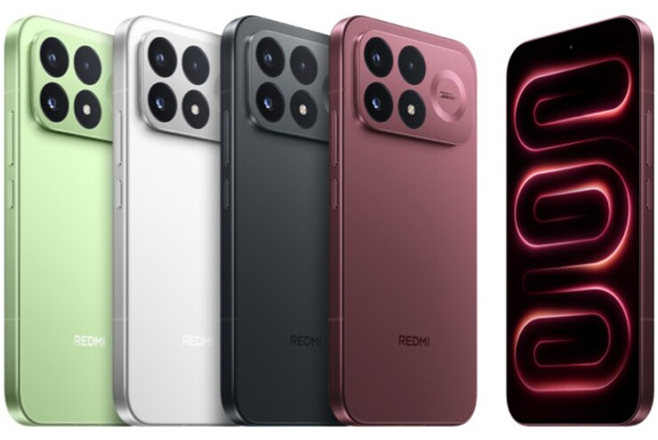
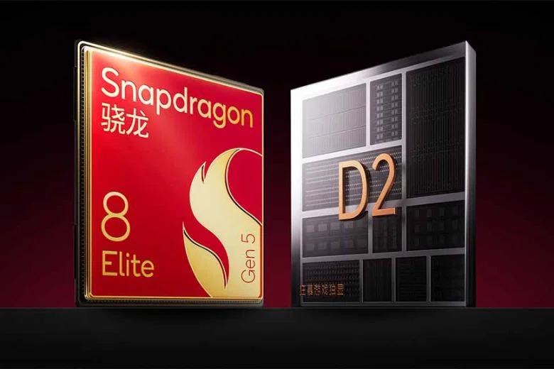

Cận cảnh Xiaomi Redmi K100 Pro Max - mẫu máy mới của Xiaomi với rất nhiều nâng cấp đáng giá tập trung mạnh vào trải nghiệm chơi game, giải trí và thời lượng sử dụng. Xiaomi Redmi K100 series vừa ra mắt phiên bản Pro Max tại thị trường Trung Quốc với hàng loạt trang bị công nghệ đáng chú ý như màn hình OLED 185Hz, chip Snapdragon 8 Elite Gen 5, camera 200MP, pin 9,070mAh và hệ thống ba loa được Bose tinh chỉnh. Điện thoại được cho là hướng đến game thủ, người dùng cường độ cao và những ai yêu thích điện thoại màn hình lớn. Hãy cùng cận cảnh Xiaomi Redmi K100 Pro Max để khám phá những điểm mới trên mẫu máy này nhé.
Thông số & Điểm nhấn chính:
- Hiệu năng: Vi xử lý Snapdragon 8 Elite Gen 5 kết hợp chip đồ họa rời Xiaomi D2 và tản nhiệt tuần hoàn lớn.
- Màn hình: Tấm nền AMOLED 6.9 inch, độ phân giải 1.5K cùng tần số quét gaming lên đến 185Hz.
- Pin & Sạc: Viên pin Si/C dung lượng khủng 9.070 mAh, hỗ trợ sạc nhanh có dây 100W và không dây 50W.
- Camera: Camera chính 200 MP (OIS), đi kèm camera tele tiềm vọng 50 MP (zoom quang 5x) và góc siêu rộng 50 MP.
- Trải nghiệm: Hệ thống âm thanh Bose 2.1, dải đèn LED RGB cá tính ở mặt lưng, vân tay siêu âm 3D và chuẩn kháng nước/bụi IP68/IP69.

So sánh 2 thế hệ:
| Thông số | Xiaomi Redmi K100 Pro Max | Xiaomi Redmi K90 Pro Max |
|---|---|---|
| Kích thước | 163,5 × 78 × 8,5 mm | 163,3 × 77,8 × 7,9 mm |
| Trọng lượng | 238 gram | 218 gram |
| Kháng nước | IP68, IP69 | IP68 |
| Tấm nền | AMOLED | AMOLED |
| Màn hình | 6,9 inch | 6,9 inch |
| Độ phân giải | 1200 × 2608 pixel | 1200 × 2608 pixel |
| Tần số quét | 185 Hz | 120 Hz |
| Độ sáng tối đa | 4500 nits | 3500 nits |
| Hệ điều hành | Android 16, HyperOS 3 | Android 16, HyperOS 3 |
| Bộ xử lý | Snapdragon 8 Elite Gen 5 V Series | Snapdragon 8 Elite Gen 5 |
| RAM | 12 GB, 16 GB | 12 GB, 16 GB |
| Bộ nhớ trong | 256 GB, 512 GB, 1 TB | 256 GB, 512 GB, 1 TB |
| Camera sau |
Góc rộng: 200 MP Tele: 50 MP Góc siêu rộng: 50 MP |
Góc rộng: 50 MP Tele: 50 MP Góc siêu rộng: 50 MP |
| Camera trước | 32 MP | 32 MP |
| Pin | 9070 mAh | 7560 mAh |
| Sạc |
Sạc nhanh có dây 100W Sạc không dây 50W Sạc có dây ngược Sạc không dây ngược |
Sạc nhanh có dây 100W Sạc không dây 50W Sạc có dây ngược |
Ưu điểm:
- Hiệu năng mạnh với Snapdragon 8 Elite Gen 5.
- Màn hình AMOLED 6,9 inch, tần số quét cao 185Hz.
- Pin dung lượng lớn 9070 mAh, hỗ trợ sạc nhanh 100W và sạc không dây 50W.
- Camera chính 200MP, hỗ trợ chống rung quang học OIS.
Hạn chế:
- Trọng lượng 238 gram, khá nặng khi sử dụng trong thời gian dài.
- Kích thước máy lớn, có thể gây khó khăn khi sử dụng bằng một tay.